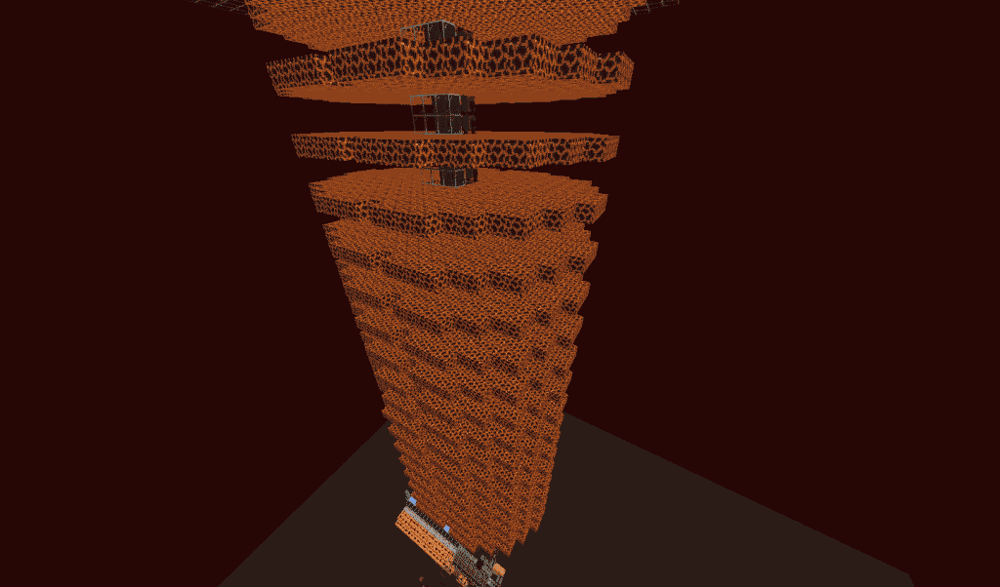
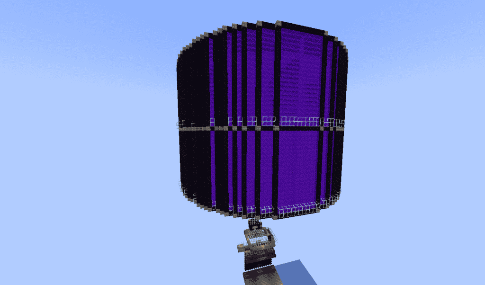

Gold Farms
Nether Based Designs
Nether based gold farms use normal mob spawning mechanics to spawn zombified-pigmen on magma block platforms and then bring them to a central area where they can be killed. These are the recommended type of gold farm on Vanilla+ as other other gold farm designs are nerfed on the server.

This farm has a drop down where the pigmen fall so they can easily be killed by a player

This nether based farm uses portals to quickly move pigmen to a killing area in the overworld
Above are two slight various of a nether based gold farm. The one on the right is a faster, but more complex and expensive to build. For both of these types of designs there are some important things to remember specifically for Vanilla+.
Vanilla+ Specific Changes
Spawn radius
On Vanilla+ mobs don’t spawn more than 64 blocks away from the player, this means you need to adjust your afk spot accordingly so it is blocks from the nearest spawning platform and 64 from the furthest
Mob Limits
On Vanilla+ if you dont have a killing method and a bunch of pigmen group up together some of them will be cleared, if more than 16 pigmen within 20 block radius or more than 10 in a 2 block radius some of them will be cleared. Please note that name tagged pigmen will not be cleared.
Overworld Based Designs
Overworld based gold farms utilize a mechanic where pigmen spawn inside of nether portals. They involve a bunch of massive nether portals, which makes them quite expensive to build. Normally they are quite fast, however they cause a lot of lag and as a result on Vanilla+ they are nerfed. We do not recommend building one of these as they are quite slow on Vanilla+.

This design uses portals to spawn pigmen in the overworld and funnels them to a central killing chamber
Vanilla+ Specific Changes
Spawning nerfs
On Vanilla+ overworld gold farms such as the design pictured are significantly slowed down
Mob Limits
On Vanilla+ if you dont have a killing method and a bunch of pigmen group up together some of them will be cleared, if more than 16 pigmen within 20 block radius or more than 10 in a 2 block radius some of them will be cleared. Please note that name tagged pigmen will not be cleared.